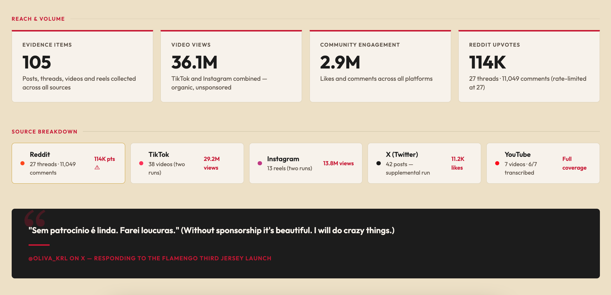
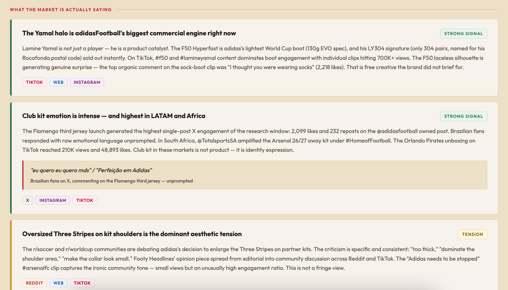
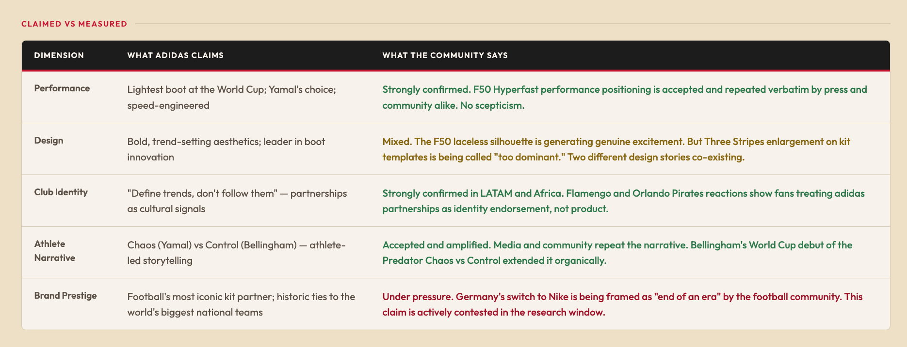
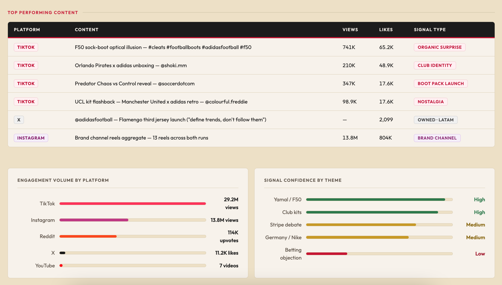

stephenjcleary
I have a Research agent called Pele. A master historian. When I need to understand what a market is actually saying, what fans genuinely feel, or what's cutting through online right now, Pele is who I go to. Pele can do a Brand DNA Audit based on web search.
Recently I gave him a new skill. Social listening. He pulls intelligence from Reddit, TikTok, Instagram, X, YouTube, and the open web and turns it into something I can actually use.
In my time I've used various social listening tools like Sprinklr and Brandwatch. I could see how AI was being integrated to provide summaries on the stacks of data points it would provide. Now I have my own version albeit it's for a one month period.
The idea is straightforward. Most brands have some version of a brand tracker that tells them what consumers claim to believe about them. What they rarely have is a live read on what people are actually saying, unprompted, in their own words, right now. The social listening skill closes that gap.
Pele collects posts, threads, videos, and reels across every major platform, then synthesises them into a structured research report. The output is a dashboard that shows reach and volume, breaks down the sources, surfaces the strongest signals, and puts brand claims under pressure by comparing them directly against community reality.

For the test run I pointed him at adidasFootball. The numbers that came back were notable. 105 evidence items collected across all sources. 36.1 million video views on TikTok and Instagram combined, all organic, all unsponsored. 2.9 million likes and comments across platforms. 114,000 Reddit upvotes from 27 threads and over 11,000 comments.
That's a lot of signal. The question is what it means.
The dashboard organises findings into named themes, each with a signal strength rating. For adidas the clearest story was Lamine Yamal. The F50 Hyperfast is adidas's lightest World Cup boot, and his LY304 signature sold out instantly. On TikTok, individual clips hit 700,000 views. The top organic comment on the sock-boot design was "I thought you were wearing socks" — 2,218 likes. That's free creative the brand never briefed.

Club kit emotion was another strong signal, highest in LATAM and Africa. The Flamengo third jersey launch generated the highest single-post X engagement in the research window. Brazilian fans responded with raw emotional language, unprompted. "Perfeição em Adidas." That's not brand language. That's belonging.
Not everything was clean. The Three Stripes enlargement on kit shoulders is generating consistent criticism across Reddit and TikTok. "Too thick," "dominate the shoulder area," "make the collar look small." A Footy Headlines piece spread from editorial into community discussion. That's a tension worth watching.
The section I find most useful is the Claimed vs Measured table. It takes each brand positioning claim and puts it next to what the community is actually saying. For adidas it showed performance credentials confirmed and amplified, club identity landing strongest in markets where football is identity rather than entertainment, and brand prestige under genuine pressure from the Germany-to-Nike story, which the community is framing as "end of an era."

The gap between what a brand says and what people repeat back is where strategy lives. The table makes it visible in one read.
The dashboard also surfaces the top performing content by platform, views, and signal type. The F50 sock-boot optical illusion was the standout — 741,000 views and 65,200 likes, tagged as Organic Surprise. The Orlando Pirates unboxing drove 210,000 views on TikTok and 48,900 likes, tagged Club Identity. The @adidasfootball Flamengo post on X hit 2,099 likes with Owned LATAM.

Signal confidence is broken down by theme too. Yamal and club kits score high. The Stripe debate and Germany situation are medium. Betting objection is low. That hierarchy matters when you're deciding where to focus.
Brand tracking tells you what people say when you ask them. Social listening tells you what they say when nobody's listening. These two things are not always the same, and the distance between them is genuinely interesting to a brand marketer.
The fans in the stands are always talking. You just have to know how to listen.